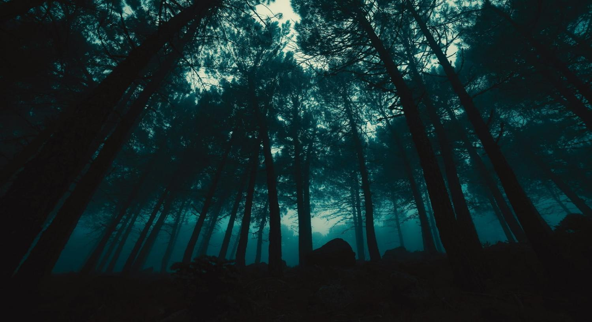

The trees loom above you menacingly as the thick canopy blocks whatever light from reaching the forest ground. With the little light your eyes can adjust to, you look down and notice that your clothes are covered in dirt and torn at the edges.
You push yourself up on shaky legs and brush as much dirt as you can off your clothes. What do you do next?
—> Assess your situation to see if you’re fit to be exploring.